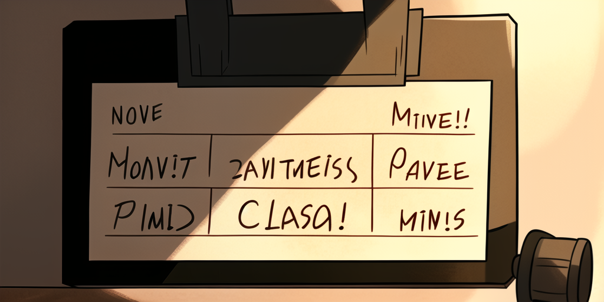

Lights, Camera, Action!

An Action defines how a position is completed in Carapace.
It consists of either the static values to be inserted. Or a function to generate them. Also, some metadata.
Reusable
An Action is reusable. It can be prefixed, filtered, styled, converted to a list, and even cached.
Take the repository completion for example.
It consists of ActionOwners and ActionRepositories combined in various ways.
Originally written for gh, it is also used in git, go, and other commands.
Contextual
An Action is invoked with Context.
This enables a modified behavior based on work directory, environment variables, or positional arguments.
Modular
Multiple Actions can be invoked concurrently and merged into one.
Like tig, which accepts subcommands, files, and git references.
Each of these is a separate Action.